Stanford CS329Z · Lecture 2 · LLMs for Builders
Michael Ryan explains language models for agent builders: sampling, Transformer and linear-attention architectures, training, inference, structured output, and context engineering.
The tables follow the original slide order. Read the edited English lecture text alongside each slide. Video ranges are approximate and may overlap for steps in the same animation. Classroom Q&A and pages without a separate explanation are omitted; original slide numbers are preserved.
Course website · Original slides · Full lecture and English captions
本课目录
Part 1
Language models and sampling
| Slide | Lecture text |
|---|---|
Slide 01 · LLMs for Builders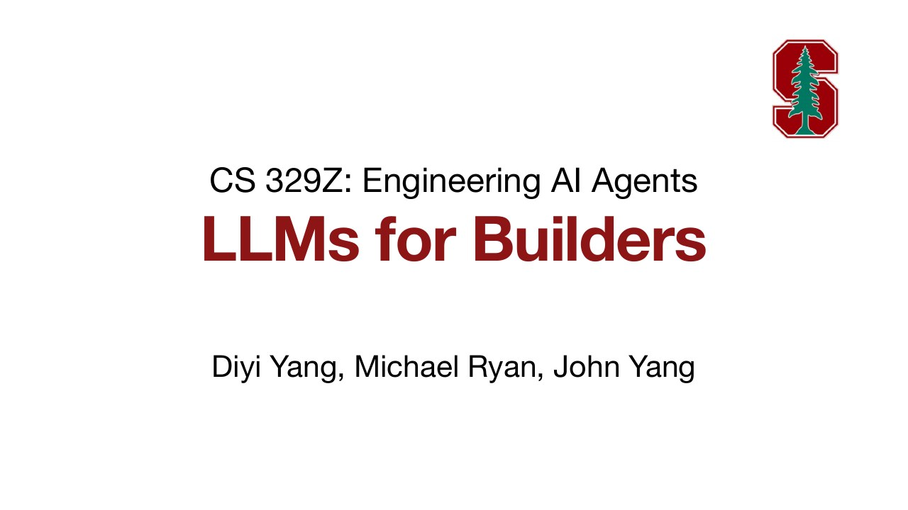 |
Michael Ryan introduces the second lecture of CS329Z. The aim is to understand enough about how language models work to make informed decisions when building applications and agents on top of them. The lecture moves from the definition of a language model to its architecture, training, inference, and practical use in an agent. |
Slide 02 · The LLM Stack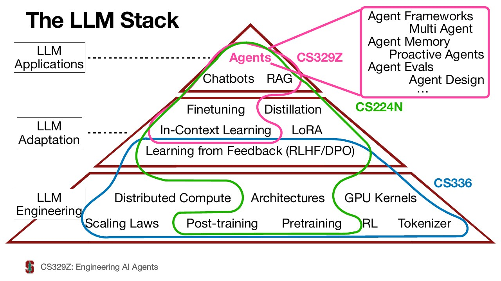 |
The LLM stack can be viewed as three overlapping layers. LLM engineering includes the infrastructure and methods needed to build the model itself: distributed computation, GPU kernels, architectures, scaling laws, pretraining, and post-training. LLM adaptation changes a model for a particular setting through methods such as fine-tuning, distillation, in-context learning, and low-rank adaptation. The application layer includes agents, chatbots, and retrieval-augmented generation. The Stanford courses occupy different parts of this picture. CS336 concentrates on building language models from scratch, while CS224N covers a broader range of natural language processing and model adaptation. CS329Z sits near the top of the stack, with an emphasis on engineering agents. There is overlap between the courses, but this course also addresses agent-specific topics beyond the usual NLP curriculum. |
Slide 03 · Why Builders Need to Understand the Model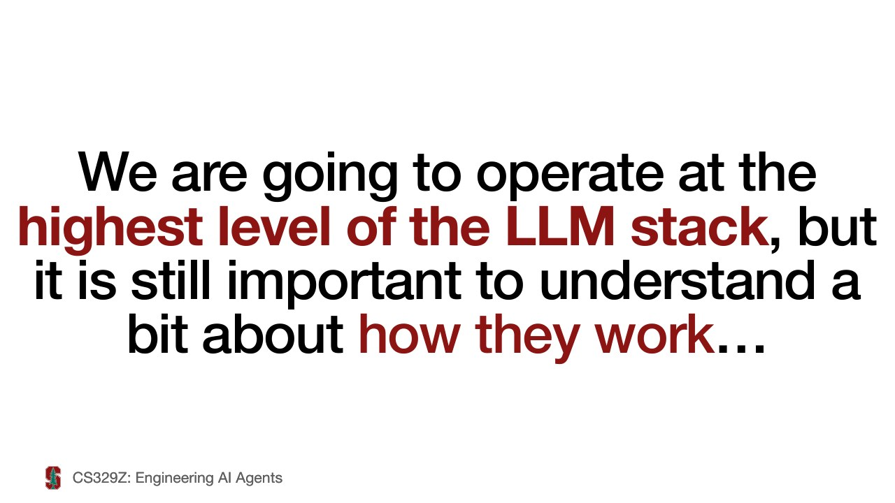 |
Most of this course will operate at the application layer. Even so, some choices made inside the language model directly affect the systems built around it. Understanding those choices gives builders a basis for deciding how to use a model and where its limitations may become important. |
Slide 04 · Learning Objectives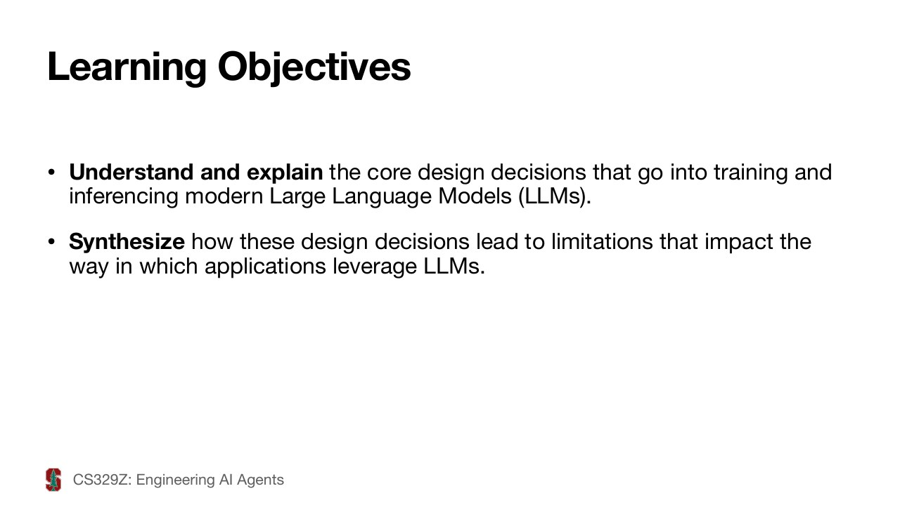 |
The first objective is to understand the major design decisions involved in training and running modern language models. The second is to connect those decisions to the limitations an application must accommodate. For example, understanding attention and the KV cache helps explain whether a model suits a long-context application and how to use it efficiently. The rest of the course will mainly use language models, rather than build them from scratch. |
Slide 05 · Lecture Overview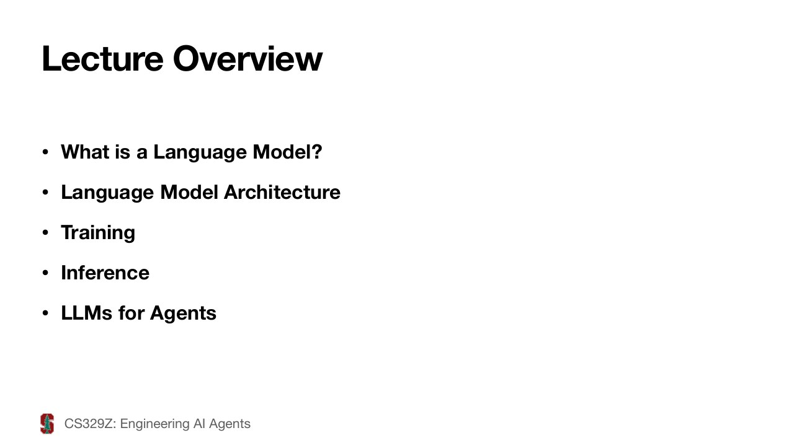 |
The lecture has five main topics: what a language model is, how its architecture works, how it is trained, how inference is performed, and how these ideas affect the design of agents. Each topic adds another part of the explanation for the behavior of the model an agent calls. |
Slide 06 · What Is a Language Model?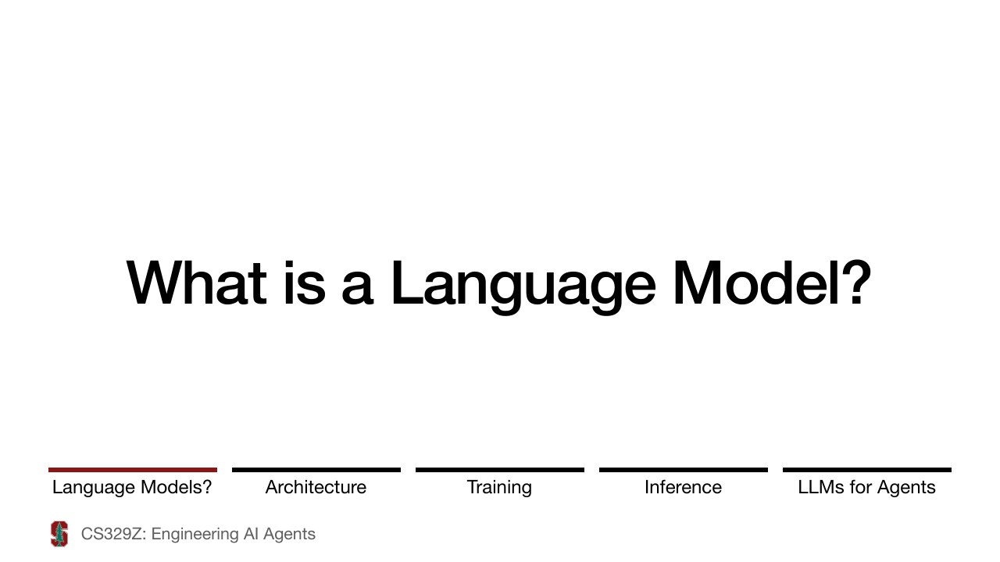 |
Start with the mathematical object underneath the familiar chat interface. A language model assigns probabilities to sequences of tokens. Looking at this definition first makes the later discussion of generation, architecture, and training easier to connect. |
Slide 07 · The Probability of a Token Sequence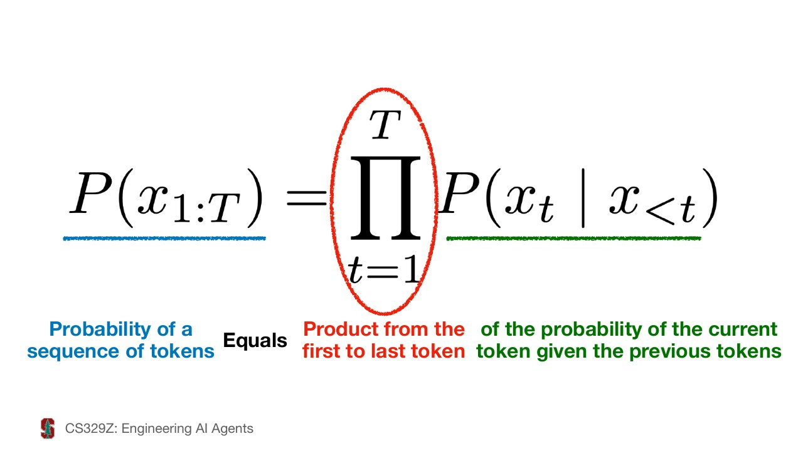 |
The probability of a complete sequence can be factored into a product of conditional probabilities. At each position, the model estimates the probability of the current token given all the preceding tokens. Multiplying these terms from the first token to the last produces the probability of the sequence. For this introductory example, tokens can be thought of as words. |
Slide 08 · A Worked Sequence-Probability Example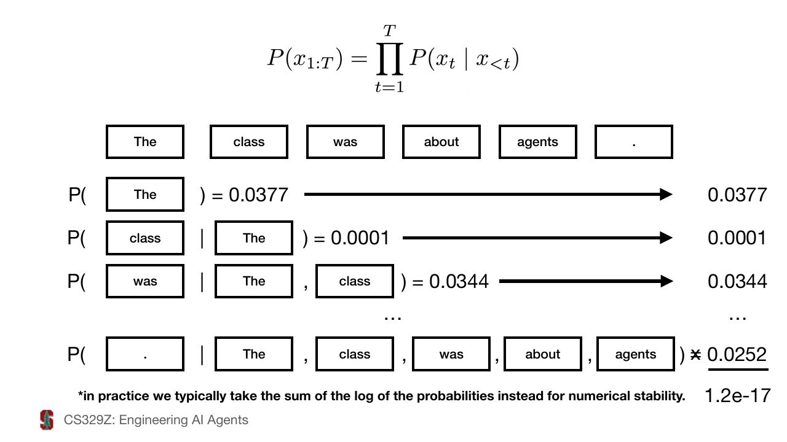 |
Consider a sentence about a class and agents. First evaluate the probability of its opening token. Then evaluate the next token conditioned on the first, the third conditioned on the first two, and so on until the final punctuation. The probability of the sentence is the product of these individual terms. These numbers can become extremely small. In practice, working with the sum of log probabilities is more numerically stable than multiplying many small probabilities directly. The underlying object is still the same probability distribution over text sequences. |
Slide 09 · The Language Model as a Distribution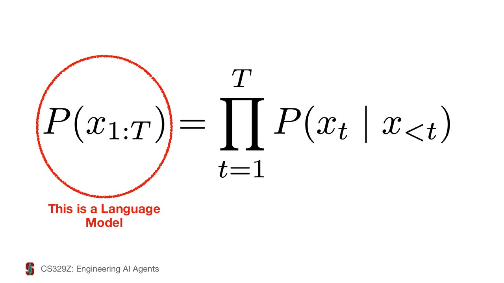 |
The complete sequence-probability expression is the language model. The individual next-token predictions provide a way to evaluate that distribution one position at a time. The next question is what this representation lets us do. |
Slide 10 · Generative and Discriminative Models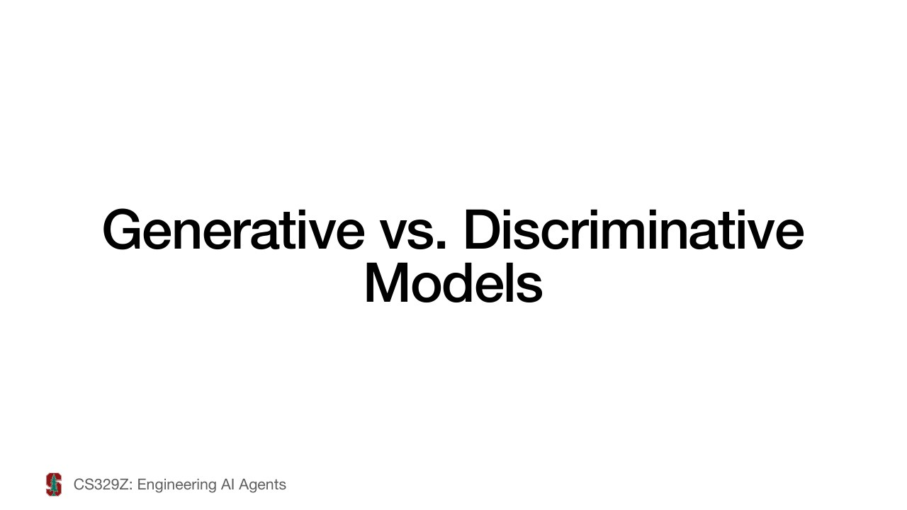 |
A useful distinction is between learning to separate classes and learning a distribution from which examples can be generated. This gives another way to understand the kind of object a language model represents. |
Slide 11 · Learning a Boundary or a Distribution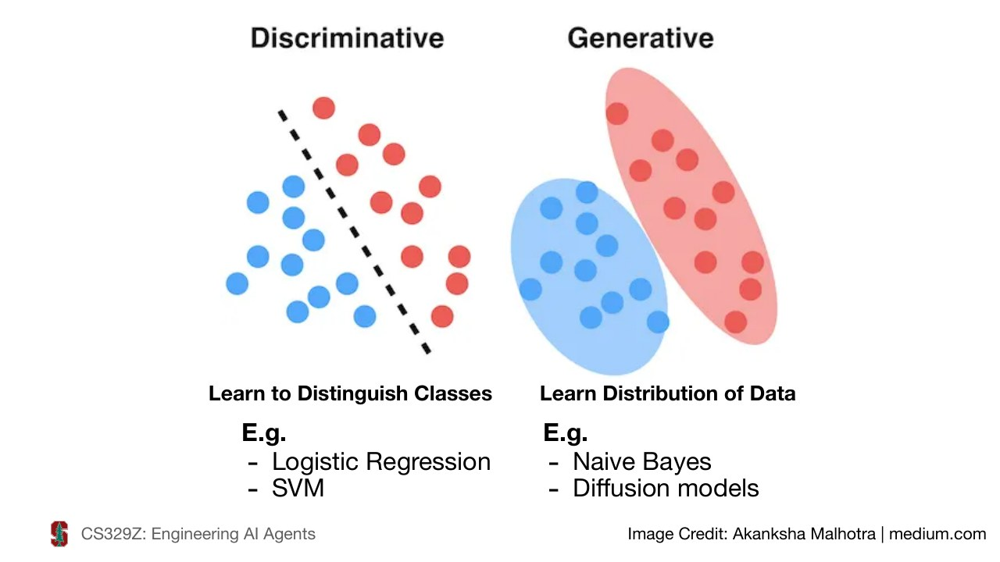 |
A discriminative model learns to distinguish categories. For example, logistic regression or a support vector machine might learn a boundary separating images of cats from images of dogs. A generative model instead models the distribution of the data: it can assign a probability to an example and generate examples from that distribution. The distinction is about what is being modeled, rather than simply whether the output contains a class label. |
Slide 13 · Language Models Can Be Sampled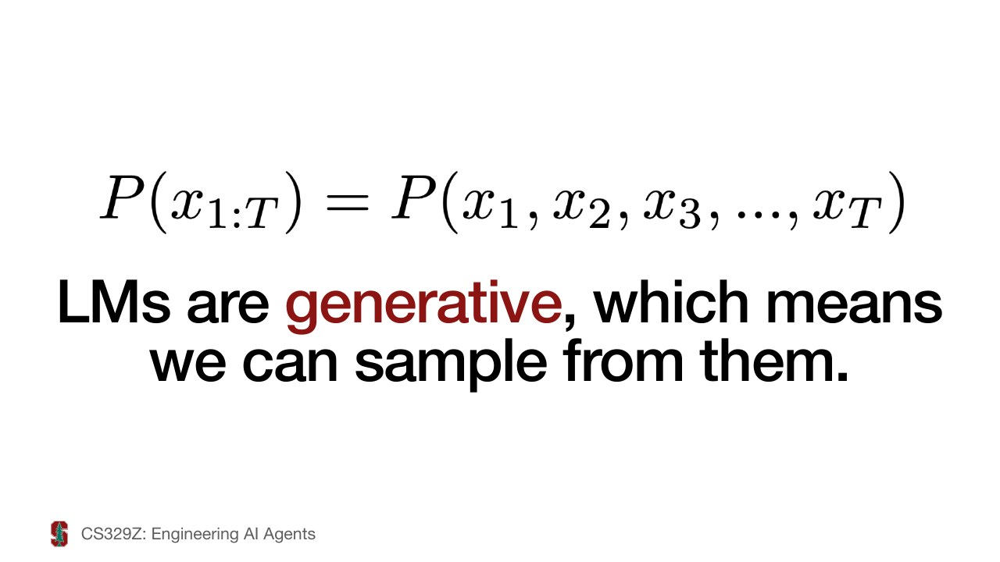 |
Language models are generally treated as generative because they model a probability distribution over complete token sequences. That distribution allows us to sample text. Generation uses the next-token probabilities repeatedly to extend a sequence. |
Slide 14 · Language Model Sampling |
To generate text, begin with a prefix and ask the model what could come next. Sampling turns the model's probability distribution into a particular continuation. |
Slide 15 · Possible Next Tokens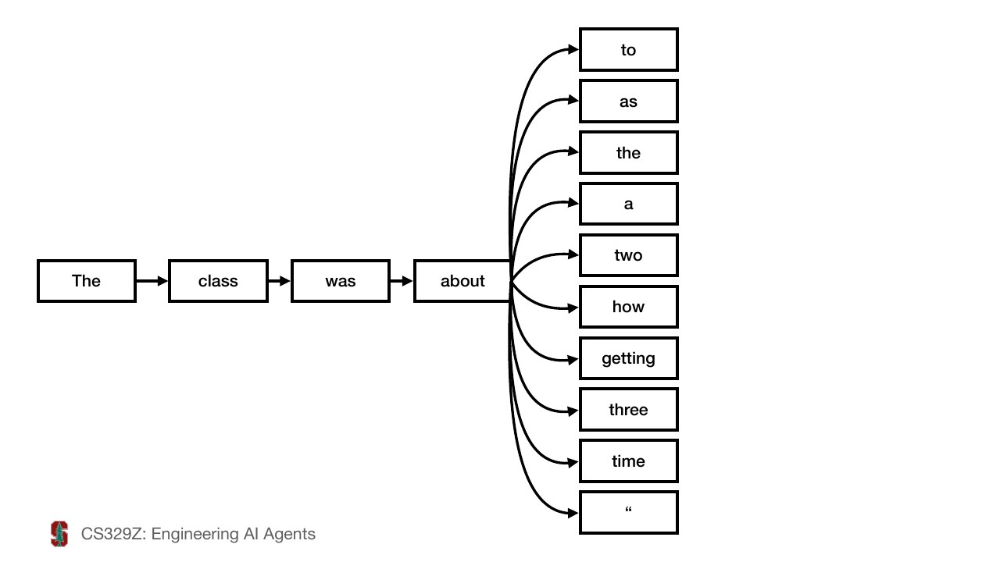 |
For a prefix describing what a class was about, the model considers possible continuations across its vocabulary. The candidate tokens include common continuations and less likely alternatives. The vocabulary defines the set over which the next-token probabilities are computed. |
Slide 16 · A Distribution over the Vocabulary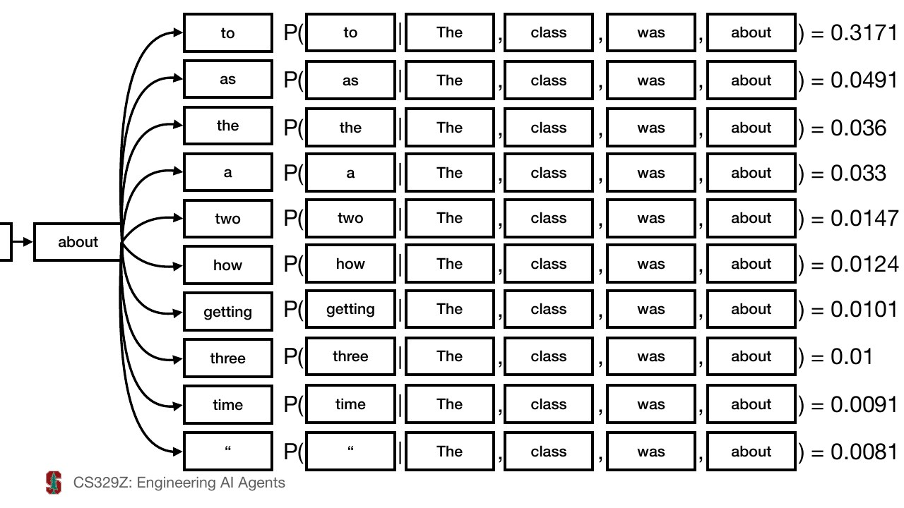 |
Each candidate receives a probability conditioned on the same prefix. For example, the model can evaluate a continuation using “to,” another using “as,” and so on. Together, these probabilities form the distribution used to select the next token. |
Slide 17 · Selecting the Most Likely Token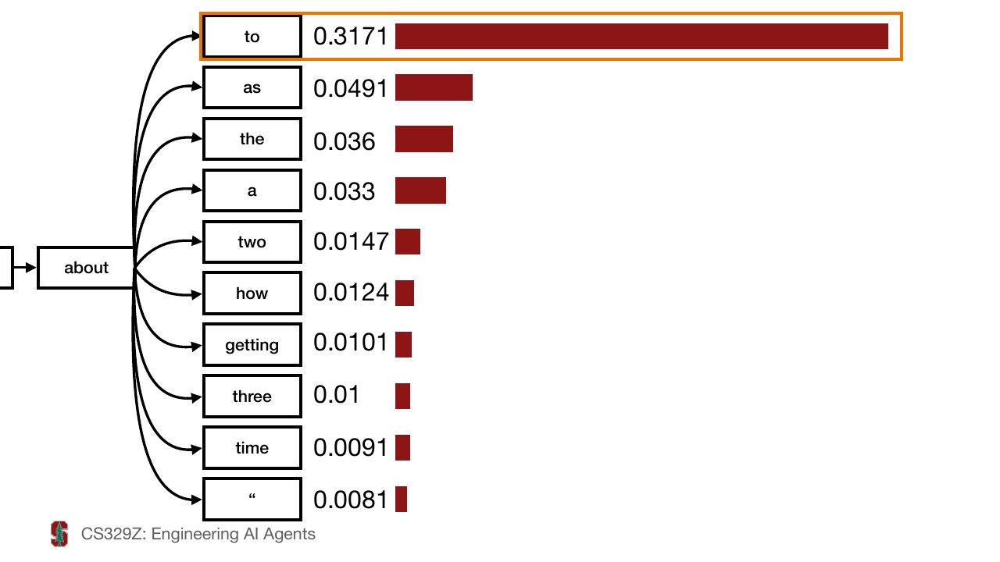 |
The bars visualize the next-token probabilities. In this example, “to” has the largest probability, so choosing the most likely continuation selects that token. It is then appended to the prefix before the next prediction is made. |
Slide 18 · Greedy, Top-p, and Top-k Decoding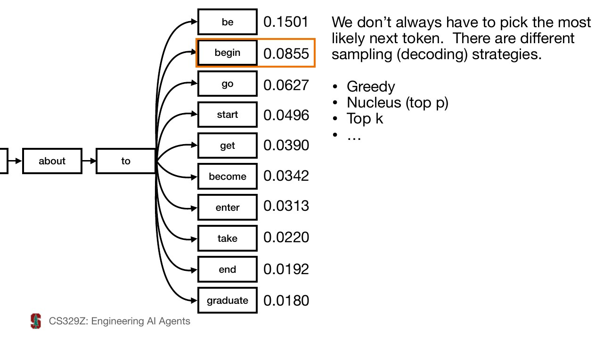 |
After appending the chosen token, run the model again on the longer prefix. The new distribution may favor “be,” but generation does not always have to take the highest-probability option; it could select “begin” instead. Greedy decoding always takes the most likely next token. Top-p, or nucleus sampling, forms a candidate set by accumulating probability mass until it reaches a chosen threshold, then samples within that set. Top-k limits sampling to a fixed number of the highest-probability candidates. These strategies offer different ways to control how much variation is allowed in a continuation. |
Slide 19 · Repeating the Generation Step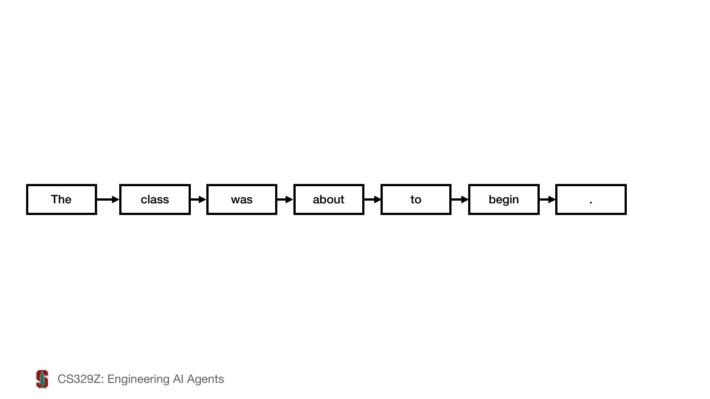 |
Continuing the same process produces a complete sentence. Each selected token becomes part of the prefix for the next step, so an early sampling decision changes the distributions encountered later. |
Slide 20 · Temperature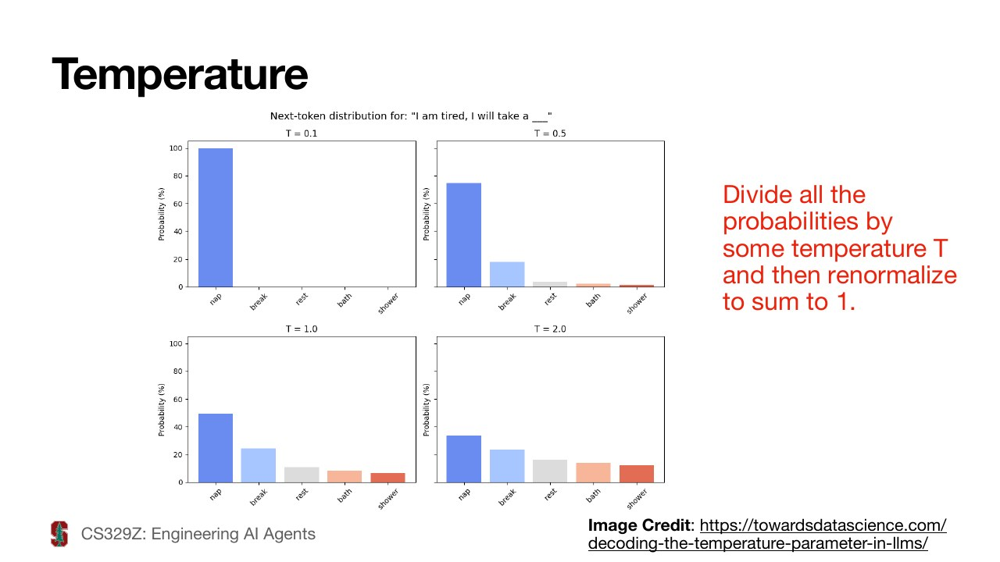 |
Temperature changes how concentrated the sampling distribution is. A higher value makes the distribution flatter and allows more diverse continuations; a lower value concentrates it toward the most likely tokens. It is a setting that can be tuned for the application. The instructor clarifies that temperature is applied to the logits before they become probabilities: divide the logits by the temperature, then normalize through softmax so the probabilities sum to one. The plotted example illustrates how this changes the relative chance of different continuations. |
Slide 21 · Beam Search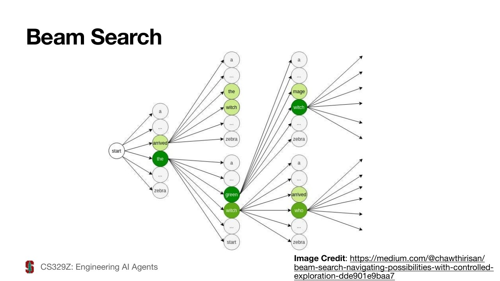 |
Generation can also consider multiple partial continuations instead of committing immediately to a single next token. Beam search keeps several candidate sequences and extends them, allowing later evidence to affect which path is retained. The cost is additional computation and memory because several states must be maintained at once. |
Slide 22 · Choosing a Sampling Strategy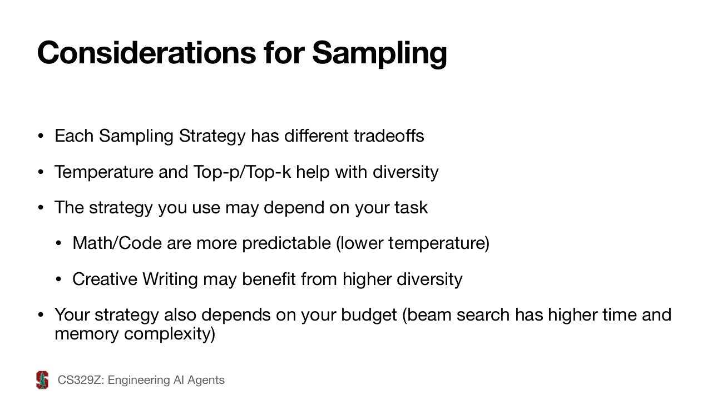 |
Sampling choices involve tradeoffs among diversity, task performance, and cost. Temperature and top-p or top-k sampling help control diversity. Predictable tasks such as some math and coding problems may benefit from lower-temperature generation, while creative writing may benefit from greater variation. The available budget matters too: maintaining multiple candidate paths, as in beam search, increases time and memory requirements. |
Part 2
Language model architecture
| Slide | Lecture text |
|---|---|
Slide 24 · Language Model Architecture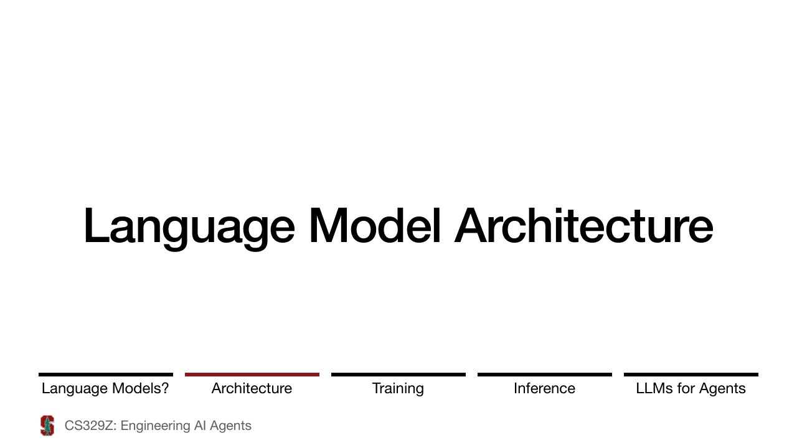 |
The next section opens the black box behind the next-token probabilities. It begins with a brief architectural history, then builds a decoder-only Transformer step by step. |
Slide 25 · A Brief History of Language Model Architectures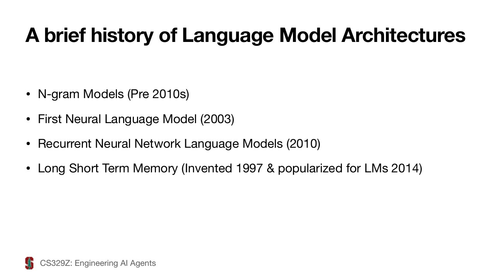 |
Early n-gram models estimated probabilities from counts. For instance, the frequency with which one word followed another provided an estimate of its conditional probability. Neural language models, recurrent neural networks, and later the widespread use of LSTMs offered increasingly flexible ways to represent sequences. The lecture does not develop these earlier architectures in detail. Instead, it focuses on Transformers and their variants, which underpin many modern language models. The earlier models provide useful background for understanding why the Transformer represented a change. |
Slide 26 · Transformers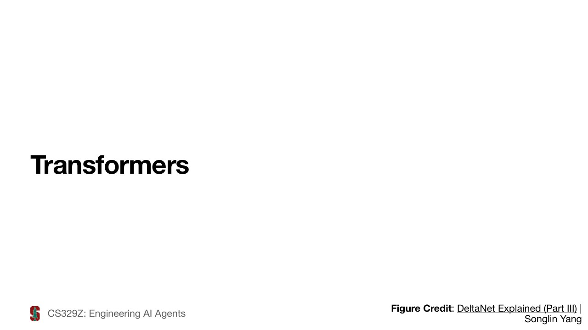 |
Transformers provide the main architectural foundation for the models discussed here. The lecture will examine the building blocks that turn token representations into a distribution over the next token. |
Slide 27 · Attention Is All You Need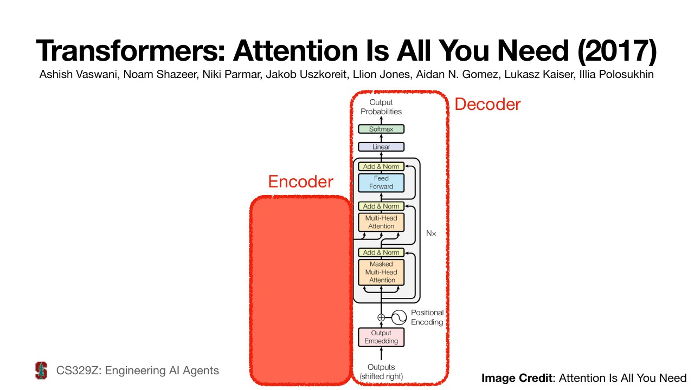 |
The original Transformer was an encoder-decoder architecture. Its encoder transforms the input into representations that the decoder uses when producing output. Many modern language models use a decoder-only architecture, so the lecture removes the encoder from the picture and concentrates on the decoder. The key components remain useful for understanding the larger family of Transformer models. |
Slide 28 · Decoder Input Tokens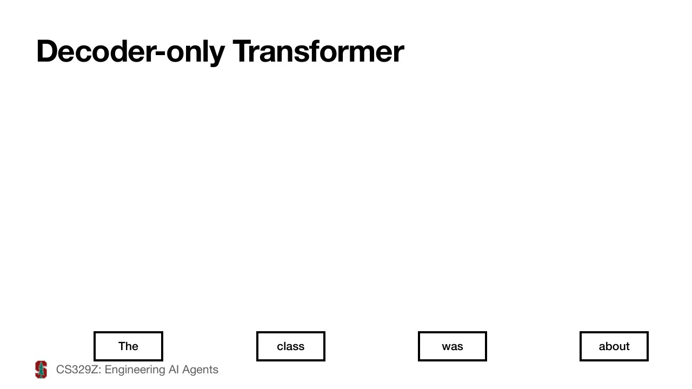 |
Begin with a short prefix consisting of four tokens. The task is to compute a distribution for the token that follows it. Each position will have its own representation as the sequence passes through the network. |
Slide 29 · Token Embeddings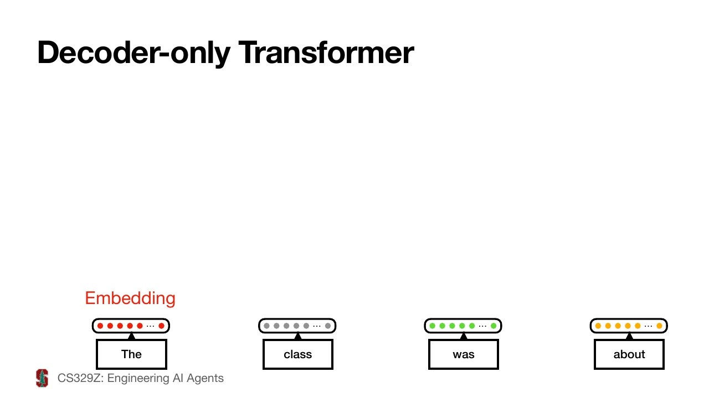 |
Convert each token into a vector representation. A learned embedding table can map the token's vocabulary identifier to its embedding vector. These vectors provide the numerical input on which the rest of the model operates. |
Slide 30 · Positional Information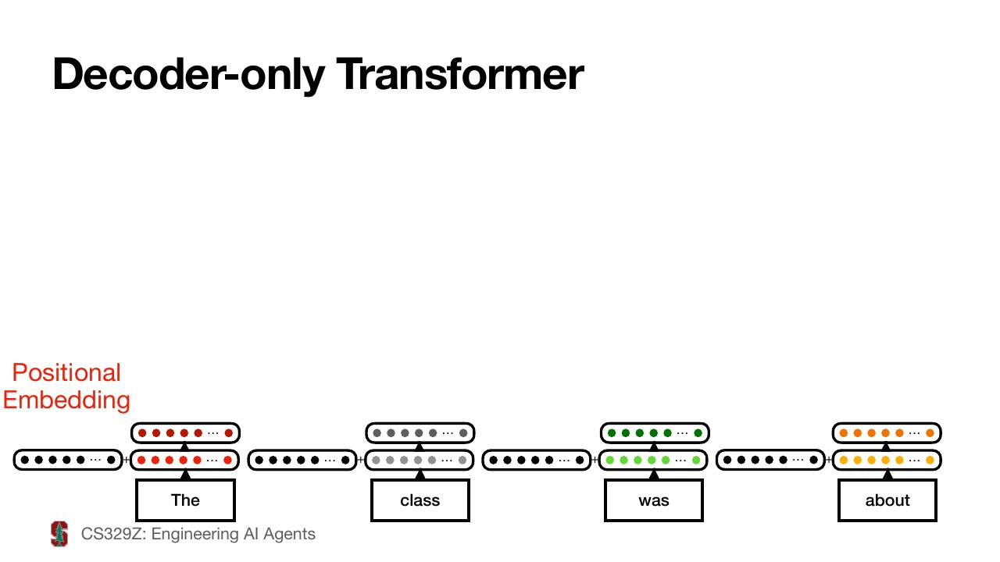 |
Add information about where each token occurs. The subsequent operations need a way to distinguish positions in the sequence, so positional representations are combined with the token embeddings. The diagram shows separate positional information for the first, second, third, and fourth tokens. |
Slide 31 · Stacking Token Representations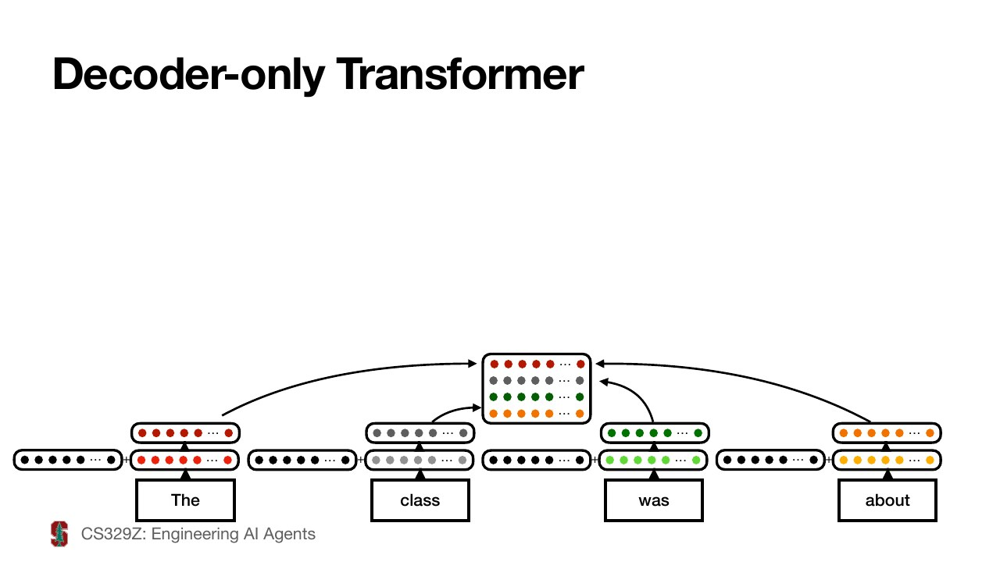 |
For a compact representation of the computation, stack the token vectors into a matrix. One dimension corresponds to the token positions and the other to the vector features. The following diagrams use this matrix to show the operations on the whole sequence together. |
Slide 32 · Understanding Attention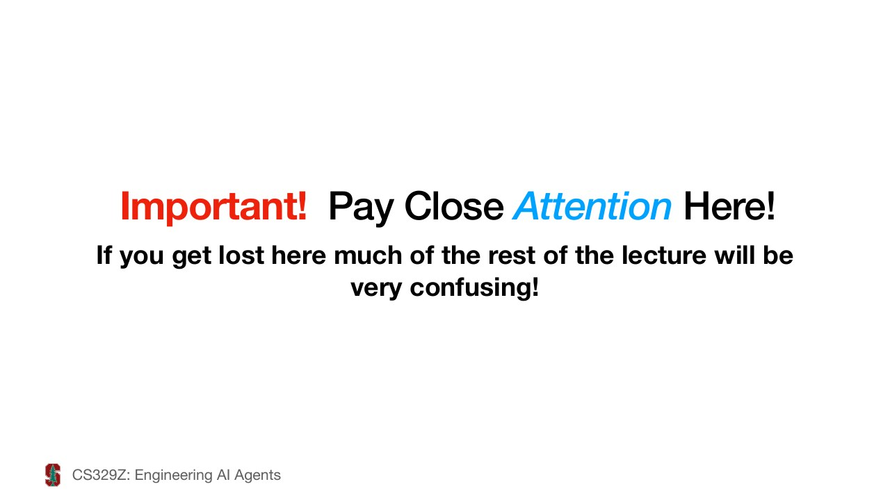 |
Attention is the central mechanism in the next part of the lecture. Understanding how it transforms the token representations will also make the later discussions of context length, memory, and inference easier to follow. |
Slide 33 · The Attention Layer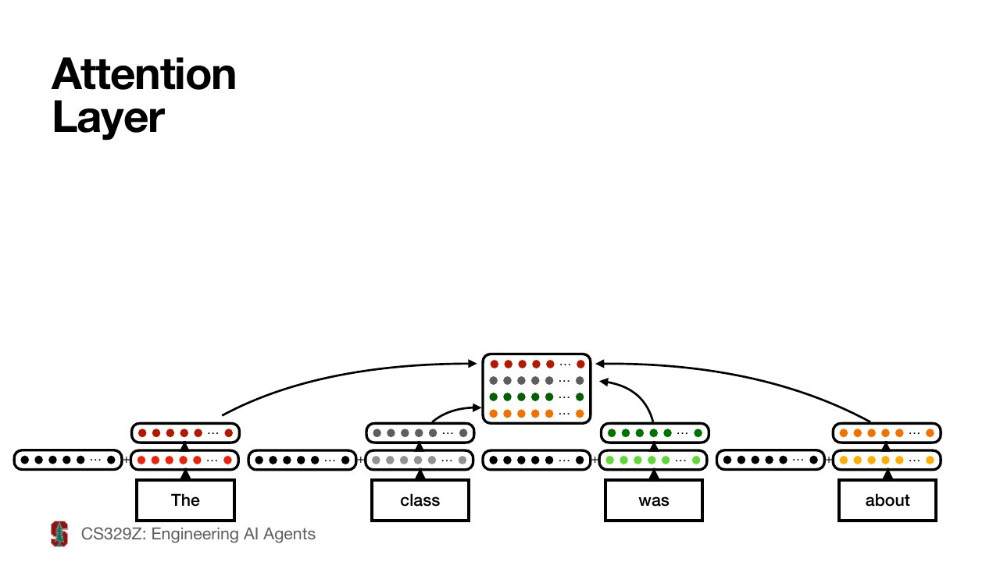 |
The attention layer starts from the token representations prepared in the preceding steps. The diagram will now expand the operations inside that layer. |
Slide 34 · Layer Normalization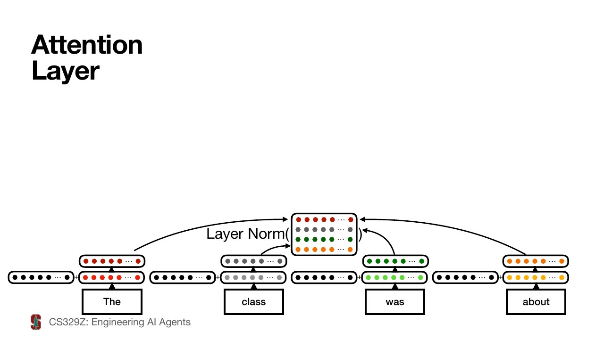 |
The inputs first pass through layer normalization. This normalizes the representations using their mean and variance before the attention projections are applied. The diagram continues to track one vector for each token position. |
Slide 35 · Queries, Keys, and Values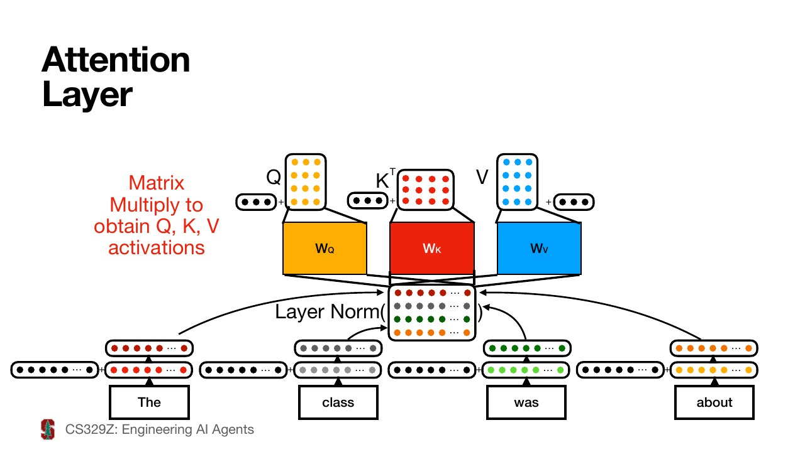 |
Multiply the input representations by three learned weight matrices to obtain queries, keys, and values. The diagrams distinguish the learned weights, shown as blocks, from the activations produced by the multiplications, shown as arrays of dots. The shapes matter. In the example, one dimension has length four because there are four input tokens. Another dimension is the feature size used for the query, key, or value representation. Transposing the key matrix makes it possible to combine every query with the keys in the next multiplication. |
Slide 36 · Computing Attention Scores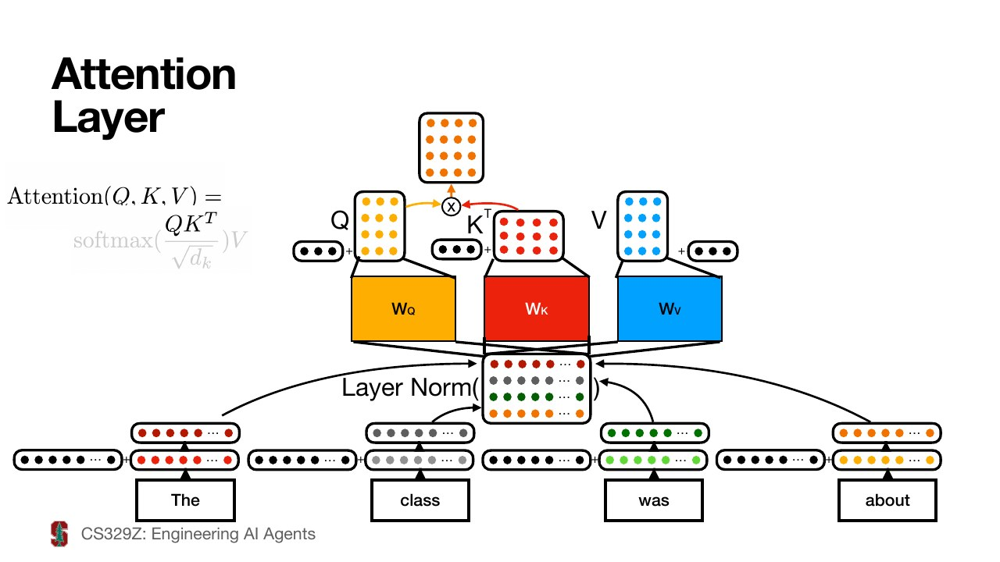 |
Multiplying the query matrix by the transposed key matrix produces attention scores. The result has one row and one column per token position, so it is an n-by-n matrix for a sequence of length n. This is where the pairwise interaction between positions becomes visible in the computation. |
Slide 37 · The Causal Attention Mask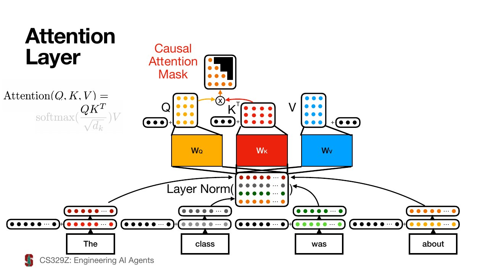 |
The decoder must not use future tokens when predicting the next token. During training, the complete text is available, but during generation those future tokens do not yet exist. A causal mask prevents a position from attending to positions that come after it. In the example, a later token can use the earlier token's information, while the earlier token cannot use information from the later one. Applying the mask preserves the left-to-right prediction setting required for generation. |
Slide 38 · Scaling the Scores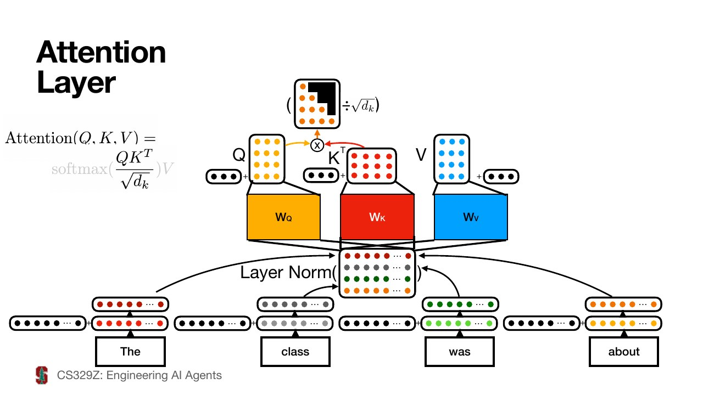 |
The attention scores are scaled using the key dimension, as shown by the square-root factor in the slide's equation. This controls the magnitude of the values before they pass through softmax and helps keep the computation stable. |
Slide 39 · Normalizing Attention Weights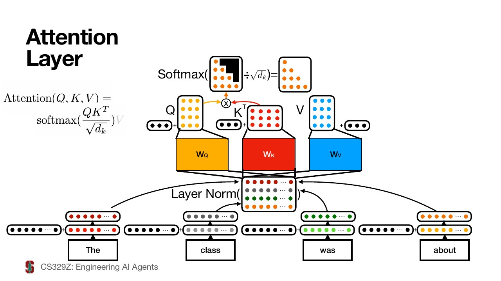 |
Apply softmax to the masked, scaled scores. This turns each row into normalized weights that sum to one. Those weights determine how the value representations will be combined for each token position. |
Slide 40 · Combining the Values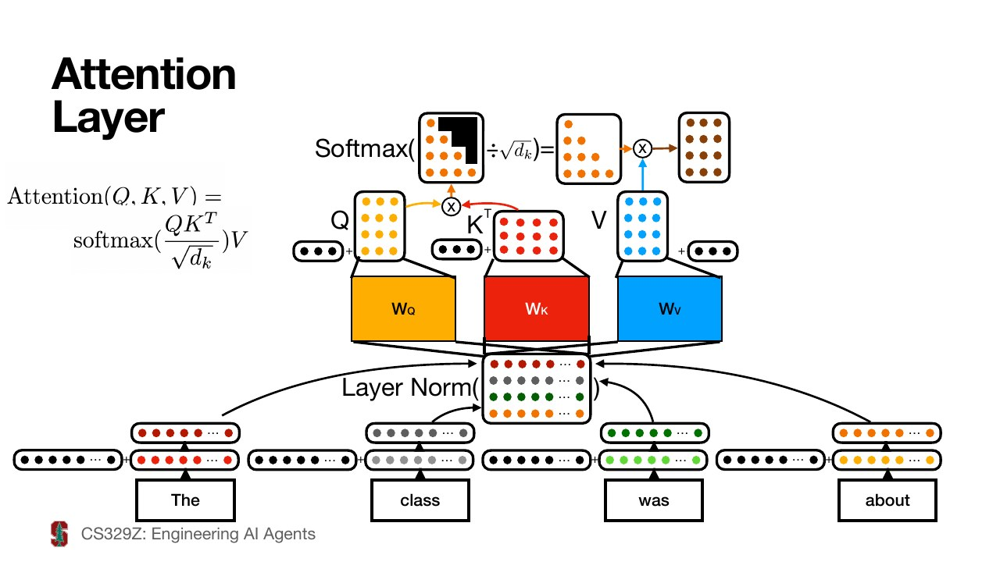 |
Multiply the normalized attention weights by the value matrix. This produces a new representation for each position by mixing value information according to the attention weights. |
Slide 41 · Projecting Back to the Model Dimension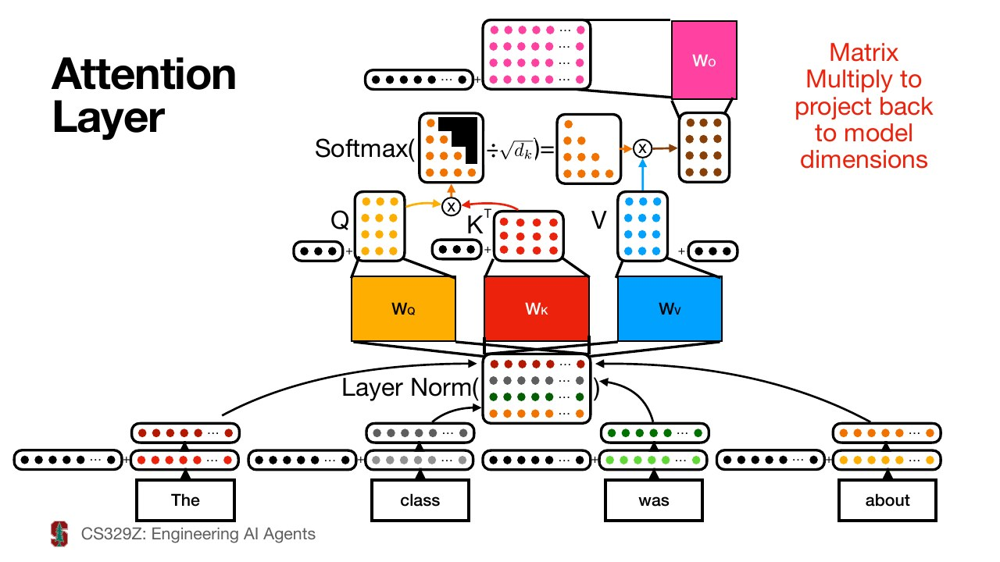 |
Apply an output projection to return the attention result to the model's representation size. Matching the dimensions makes it possible to combine this output with the input representation through a residual connection. |
Slide 42 · The Residual Connection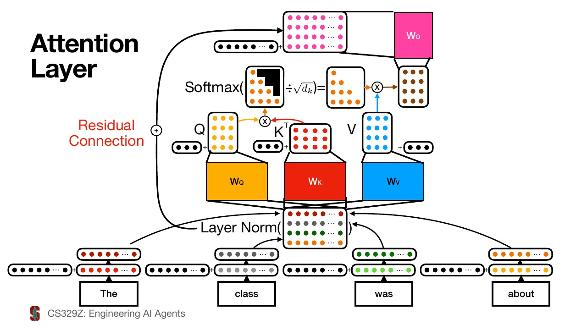 |
Add a residual connection around the attention computation. This provides a path that helps gradients flow through the network and supports stable training. The attention result is combined with the representation that entered the layer. |
Slide 43 · The Completed Attention Layer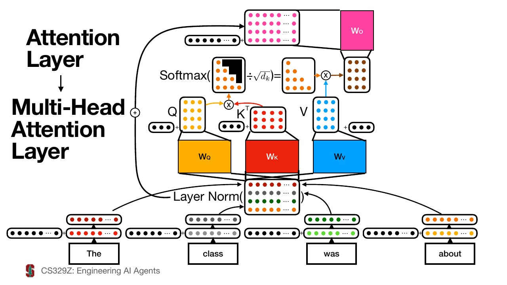 |
These operations complete the attention layer: normalization and learned projections, masked attention scores, softmax, value mixing, an output projection, and a residual connection. The next extension is to compute several attention representations in parallel. |
Slide 44 · Multi-Head Attention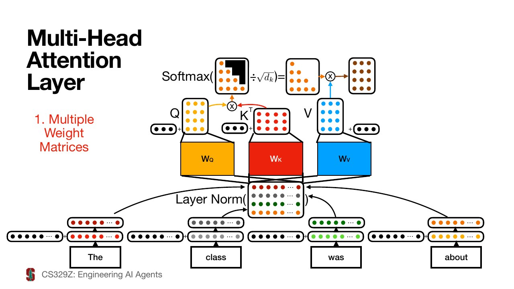 |
Multi-head attention repeats the attention computation using multiple sets of learned projection weights. The diagram stacks these computations to represent several heads operating on the same sequence. |
Slide 45 · Parallel Attention Heads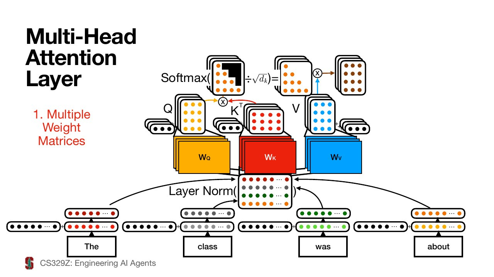 |
Each head produces its own attention output. Running several heads gives the model more than one representation of the relationships within the sequence, rather than relying on a single attention computation. |
Slide 46 · Concatenating the Heads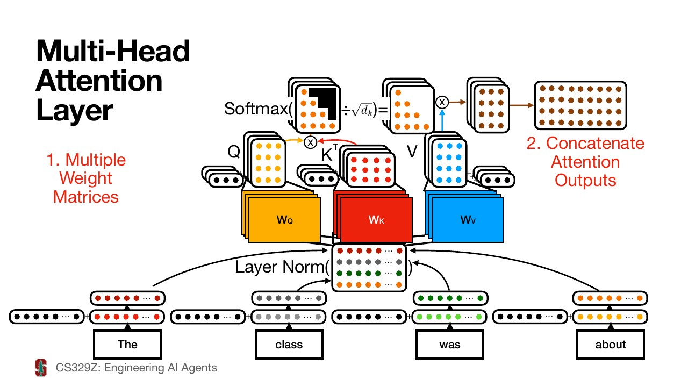 |
Place the outputs of the attention heads next to one another. This concatenation creates a wider representation that contains the results from all of the heads. |
Slide 47 · Projecting the Combined Output |
Use a larger output projection to map the concatenated head outputs back to the original model dimension. Even though several heads have been combined, the layer's final representation has the size expected by the rest of the network. |
Slide 48 · Why Use Multiple Heads?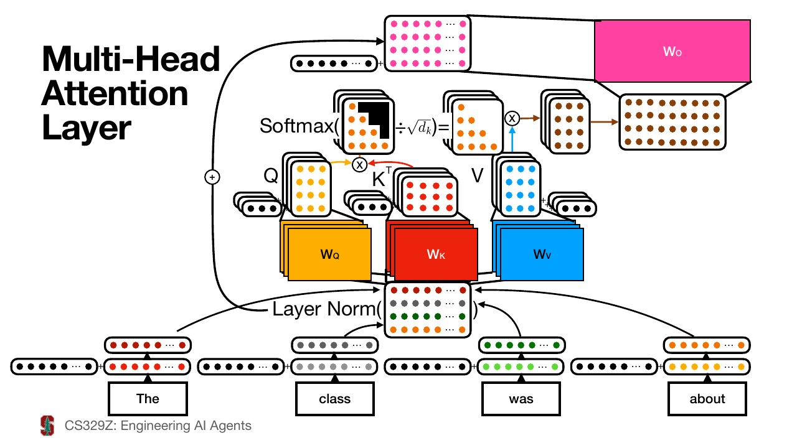 |
The multiple heads allow different representations of the same sequence to be computed together. This multi-head construction is the form used in the Transformer block, extending the single-head computation introduced earlier. |
Slide 50 · Multi-Head Causal Self-Attention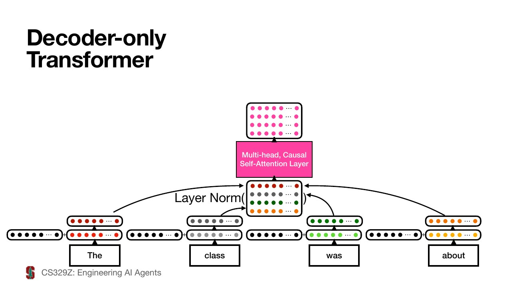 |
The detailed attention computation can now be represented as one component: multi-head causal self-attention. Collapsing it into a block makes the remaining decoder architecture easier to see. |
Slide 51 · Normalization before the Feed-Forward Layer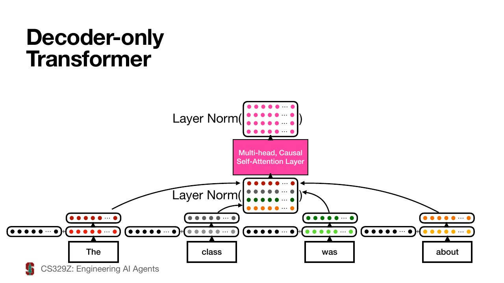 |
Apply another layer normalization to the attention output. This prepares the representation for the next component in the Transformer block. |
Slide 52 · A Second Residual Path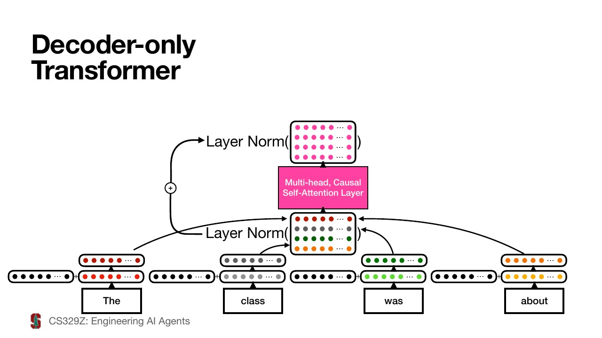 |
The diagram sets up a residual path around the next computation. As with attention, this allows the new transformation to be combined with the representation entering it. |
Slide 53 · The Feed-Forward Component |
The next component is a conventional feed-forward network. It transforms the representations using learned matrix operations after the attention layer has combined information across positions. |
Slide 54 · Combining the Feed-Forward Output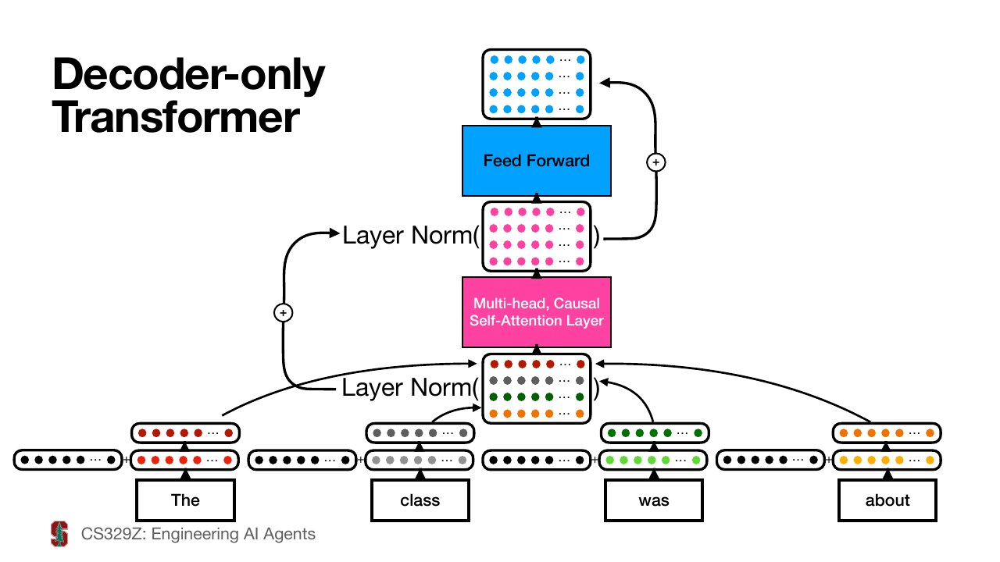 |
Add the feed-forward result through the residual connection. Together with the earlier attention component and normalization steps, this forms the structure that will be repeated throughout the decoder. |
Slide 56 · Stacking Transformer Blocks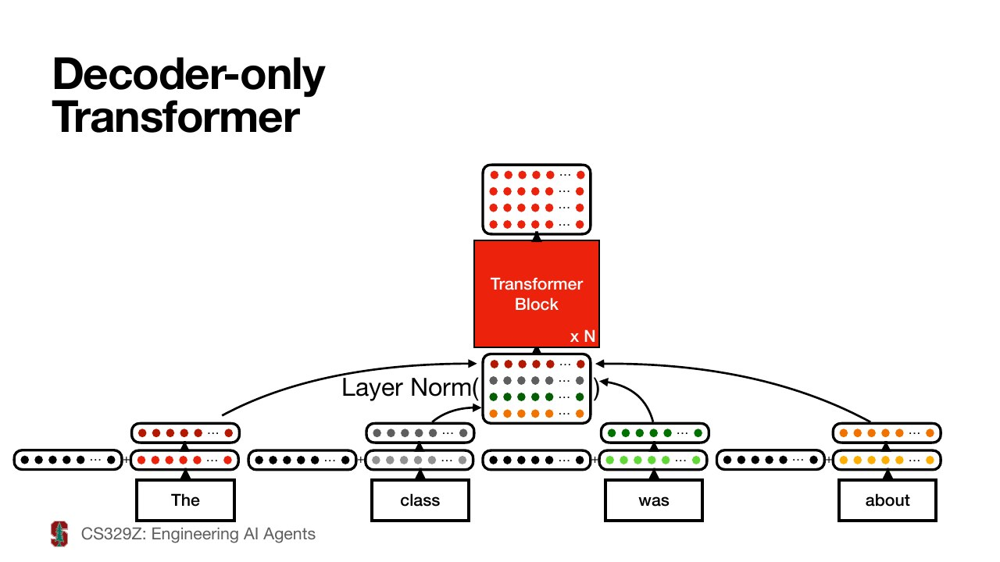 |
The complete unit is a Transformer block. Stacking many such blocks creates a deep network, with each block receiving and transforming the representations produced by the preceding one. |
Slide 57 · The Language Modeling Head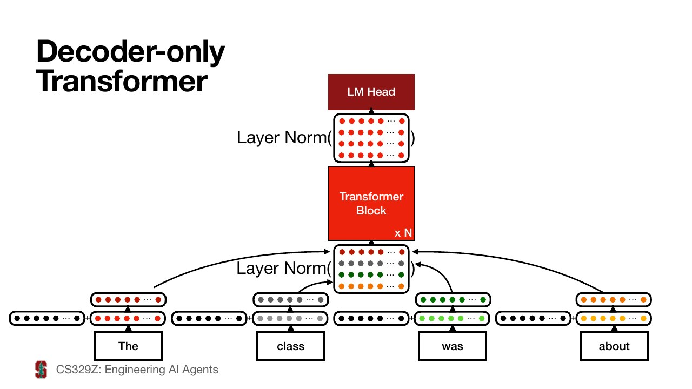 |
The language modeling head maps the final hidden representation to a vector with one entry per vocabulary token. It changes the feature dimension from the model's hidden size to the size needed for next-token prediction. |
Slide 58 · Vocabulary-Sized Outputs |
The head produces the output vectors used to predict tokens. There is an output for each position in the input sequence, with a dimension corresponding to the vocabulary. |
Slide 59 · From Outputs to Probabilities |
The diagram shows softmax converting the model's output into probabilities. These are the next-token distributions that the earlier sampling examples treated as a black box. |
Slide 60 · Reading the Next-Token Prediction |
The matrix can be separated back into outputs for individual token positions. For generation after the supplied prefix, the relevant distribution is the one at the final position. It tells us what token is likely to come next. The sequence of embeddings, attention blocks, and the language modeling head is therefore what produces the distribution used by the sampler. |
Slide 61 · Attention versus Recurrence |
A major advantage of self-attention is that the positions in a known training sequence can be processed in parallel. The original Transformer comparison highlights a constant number of sequential operations per layer, which suits GPUs well. A recurrent architecture instead carries a state from one position to the next, creating a sequential dependency across the sequence. This parallelism does not mean that attention has constant total cost. Full attention constructs pairwise interactions across positions, giving a quadratic dependence on sequence length. That becomes expensive when the context is long. |
Slide 62 · The Original Transformer's Efficiency |
The original Transformer results showed improvements in both quality and training cost relative to the systems being compared. The scale of the models in that historical comparison was also much smaller than the largest language models discussed today. The table helps explain why the architecture attracted attention when it was introduced. |
Slide 63 · Linear Attention |
Linear attention changes the attention computation to reduce the cost associated with the sequence-length-squared interaction. The next diagrams develop the idea by modifying the attention layer already introduced. |
Slide 64 · Revisiting the Attention Computation |
Start from the familiar attention layer. The part to reconsider is the operation that constructs and normalizes interactions between all query and key positions. |
Slide 65 · Changing the Attention Operation |
The goal is to address the quadratic dependence on context length. The lecture uses a simplified linear-attention construction to show how changing the order of matrix operations can change what must be stored. |
Slide 66 · Removing Softmax in the Simplified Example |
In this illustrative construction, remove the softmax operation. The remaining sequence of matrix multiplications can then be regrouped. This is the key algebraic change behind the next steps in the diagram. |
Slide 67 · Reordering the Multiplications |
Instead of first combining queries and keys into a sequence-by-sequence matrix, combine keys and values first. Changing the association of the multiplications produces an intermediate representation whose size is determined by feature dimensions rather than the number of token positions. |
Slide 68 · Processing the First Token |
The recurrent view begins with a single token and its query, key, and value projections. The diagram now tracks a state that can be carried forward as additional tokens arrive. |
Slide 69 · A Fixed-Size State |
Combining the key and value information produces the state matrix. In the toy diagram this matrix is three by three, reflecting the hidden feature size, whereas the earlier full-attention score matrix was four by four because it represented four sequence positions. The state after the first token is labeled S1. |
Slide 70 · Reading from the State |
Use the current query to read from the state matrix. The state contains the information accumulated so far, and the query determines the output extracted from that representation. |
Slide 71 · Producing the Layer Output |
Apply the output projection to the state-derived representation. This produces the layer's output while retaining the state needed to process the next token. |
Slide 72 · The Linear-Attention Update Rule |
The next question is how the state changes when another token arrives. The following steps show the same computation as an incremental update rather than rebuilding the entire context interaction. |
Slide 73 · Discarding Temporary Computation |
Clear the intermediate quantities that are no longer needed for the next step. The information that must persist is the accumulated state, rather than every intermediate activation from the previous token. |
Slide 74 · Saving the State |
Carry the state forward to the next token. This fixed-size object summarizes the preceding computation and will be updated with the new token's contribution. |
Slide 75 · Passing State to the Next Step |
The diagram moves the saved state into position for the next update. The previous token's accumulated information remains available even though its temporary computation has been cleared. |
Slide 76 · Receiving the Next Token |
Process the next token through the layer's projections. Its new representations supply the information needed to update the saved state and compute the next output. |
Slide 77 · Computing the New State Contribution |
Form the new token's contribution to the state. The diagram again uses a small feature-by-feature matrix, so adding a token does not require a larger state matrix. |
Slide 78 · Updating the Accumulated State |
Add the new contribution to the saved state to obtain S2. The updated state now incorporates the information accumulated through the second token. |
Slide 79 · Computing the Next Output |
Read from the updated state and project the result to produce the next layer output. The update and readout repeat as the sequence grows. |
Slide 80 · Clearing Temporary Values Again |
After producing the output, discard temporary values and retain the updated state. This repeats the same memory-management pattern used after the first token. |
Slide 81 · Continuing through the Sequence |
The same update rule applies to subsequent tokens. Each step adds new information to the state and produces an output without retaining a separate history of all earlier intermediate computations. |
Slide 82 · Constant-Size Recurrent Memory |
The state remains the same size as more tokens are processed. This is the attractive memory property of the construction: it keeps updating a fixed matrix rather than growing a stored representation with the number of preceding tokens. |
Slide 83 · Speed and Memory Benefits |
Linear attention can reduce both computation and memory requirements. The recurrent state is determined by feature dimensions, and only that state needs to be carried between tokens. This removes the need to maintain the full sequence-by-sequence attention interaction in the simplified comparison, which is particularly helpful as sequences become longer. |
Slide 84 · The Long-Context Tradeoff |
Compressing a long history into a fixed-size state can make it harder to recover a particular detail. In a needle-in-a-haystack task, the model may encounter a special number inside a long document and later be asked to retrieve it. Full attention can refer directly back to earlier positions; a compressed recurrent state must preserve the relevant information while processing everything that follows. The benchmark figure illustrates degradation on longer sequences for the recurrent or compressed-state models being compared. This makes the architecture relevant to the kind of long-context task an agent must perform, rather than only to its speed. |
Slide 85 · A Note about Context Length |
The lecture connects usable context length to positional representations and training. Merely writing down the attention computation does not guarantee that a model will use arbitrarily long sequences effectively. The model must learn to operate with the positional information and context lengths it encounters, so the length used during training matters in practice. |
Slide 86 · Bringing the Architectures Together |
The architectural comparison can now be expressed in terms of computation, memory, and access to earlier information. These are the tradeoffs a builder needs to recognize when choosing a model. |
Slide 87 · Full Softmax Attention versus Linear Attention |
Full softmax attention has quadratic context-length cost for the sequence computation, but it allows a token to refer directly to earlier token representations. Its KV cache grows with the amount of context. Linear attention has linear sequence-length scaling in the comparison and can keep a fixed-size recurrent state. The memory advantage comes with a different access pattern: new tokens interact with the compressed state rather than all earlier tokens individually. That compression can make demanding long-context retrieval harder. The useful choice depends on the workload, not simply on which architecture is faster. |
Slide 88 · Hybrid Attention Architectures |
Practical models can combine linear-attention layers with occasional global-attention layers. Most layers benefit from the more efficient state-based computation, while the global layers periodically allow fuller interaction across the context. |
Slide 89 · Evaluating the Hybrid Tradeoff |
The example compares the effect of adding sliding-window or global attention to a linear-attention architecture. Retrieval from the context improves when these additional interactions are available. Simpler common-sense tasks do not rely on looking back through a long context in the same way, so they can behave differently. Architecture choices therefore need to be evaluated against the intended tasks. |
Slide 90 · Reading a Modern Model Architecture |
The Kimi K3 diagram is an example of how these components appear in a more elaborate model. It includes linear attention, feed-forward components, and multi-head attention operating on latent representations. There are additional mechanisms, such as gates, but the earlier explanation gives a vocabulary for recognizing the main pieces and their roles. |
Slide 91 · Why Architecture Matters for Agents |
Agents can accumulate very long contexts, and inference efficiency directly affects the systems built around them. Knowing the model's architecture helps a builder choose a model and design its surrounding harness with the model's strengths and limitations in mind. A workload that depends on retrieving details from a long history may place different demands on the model than one that prioritizes efficient recurrent processing. Understanding these distinctions makes it possible to compare choices and test them deliberately. |
Part 3
Training


Part 4
Inference


Part 5